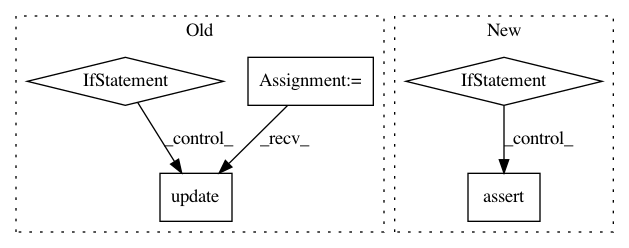

a68a41b9182a6b9f112f659e893800631c13eb39,pyemma/_base/serialization/serialization.py,SerializableMixIn,__getstate__,#SerializableMixIn#,427
Before Change
logger.debug("classes to inspect during setstate: \n%s" % classes_to_inspect)
from pyemma._ext.sklearn.base import BaseEstimator
for klass in classes_to_inspect:
inc = self._get_state_of_serializeable_fields(klass)
// get estimation parameter for all classes in the hierarchy too.
if issubclass(klass, BaseEstimator):
up = {k: getattr(self, k, None) for k in klass._get_param_names()}
inc.update(up)
res.update(inc)
// handle special cases Estimator and Model, just use their parameters.
if hasattr(self, "get_params"):
After Change
// validation
if _debug:
from pyemma.coordinates.data._base.datasource import DataSource
if isinstance(self, DataSource):
assert "_is_reader" in state
return state
except:
logger.exception("exception during pickling {}".format(self))
In pattern: SUPERPATTERN
Frequency: 3
Non-data size: 5
Instances
Project Name: markovmodel/PyEMMA
Commit Name: a68a41b9182a6b9f112f659e893800631c13eb39
Time: 2017-12-17
Author: m.scherer@fu-berlin.de
File Name: pyemma/_base/serialization/serialization.py
Class Name: SerializableMixIn
Method Name: __getstate__
Project Name: nilmtk/nilmtk
Commit Name: 7833c21b24081e8173ca8121b57ad0edeced64cf
Time: 2014-05-21
Author: jack-list@xlk.org.uk
File Name: nilmtk/elecmeter.py
Class Name: ElecMeter
Method Name: __init__
Project Name: dmlc/gluon-nlp
Commit Name: 03b0e7061cf477fbeccb9c128ee76603df582d86
Time: 2018-09-04
Author: leonard@lausen.nl
File Name: scripts/word_embeddings/evaluate_pretrained.py
Class Name:
Method Name: load_embedding_from_path